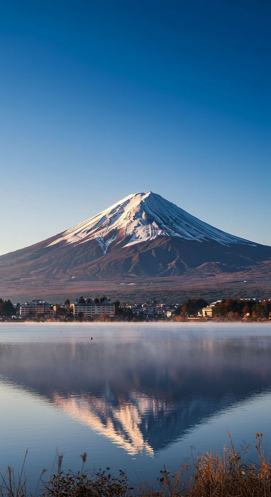

Stratovolcanoes

Mount Vesuvius
Famous for destroying Pompeii in 79 AD, Vesuvius remains one of the world's most dangerous volcanoes due to its explosive history and proximity to Naples. Its perfectly preserved archaeological sites offer a haunting glimpse into ancient Roman life.

Mount Etna
Europe's most active stratovolcano, Mount Etna has been erupting for over 500,000 years. This Sicilian giant continuously reshapes the landscape while providing fertile volcanic soil that supports thriving vineyards and agriculture.
Mount Fuji
Japan's tallest peak and sacred stratovolcano, Mount Fuji last erupted in 1707. Revered in Japanese culture and art, this perfectly symmetrical mountain attracts millions of visitors and climbers seeking spiritual connection and natural beauty.